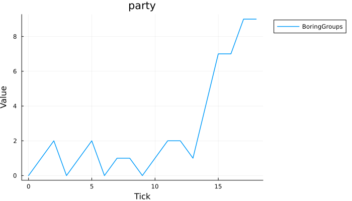
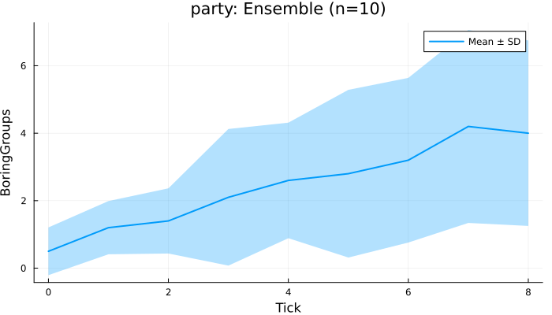
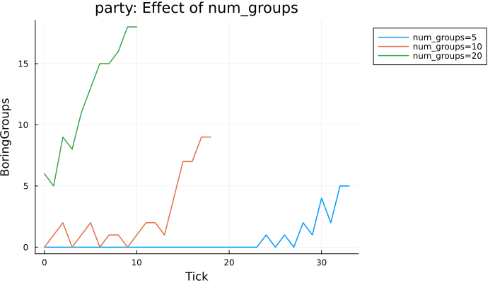

Party
Overview
WHAT IS IT?
This is a model of a cocktail party. The men and women at the party form groups. A party-goer becomes uncomfortable and switches groups if their current group has too many members of the opposite sex. What types of group result?
HOW IT WORKS
The party-goers have a TOLERANCE that defines their comfort level with a group that has members of the opposite sex. If they are in a group that has a higher percentage of people of the opposite sex than their TOLERANCE allows, then they are considered “uncomfortable”, and they leave that group to find another group. Movement continues until everyone at the party is “comfortable” with their group.
THINGS TO NOTICE
At the end of the simulation (when everyone is happy), notice the number of single-sex groups. Are there more than at the start?
THINGS TO TRY
Try varying TOLERANCE. Is there a critical tolerance at which each all groups end up being single-sex? At different tolerance levels, does it take longer or shorter for everyone to become comfortable?
See how many mixed groups (not a single-sex group) you can get.
Using the GO ONCE button, experiment with different tolerances. Watch how one unhappy person can disrupt the stability of other groups.
Is it possible to have an initial grouping such that the party never reaches a stable state? (i.e. the model never stops running)
Observe real parties. Is this model descriptive of real social settings? What tolerance level do real people typically have?
EXTENDING THE MODEL
Add more attributes to the model. Instead of male/female, try a trait that has more than two types, like race or religion. (You might use NetLogo’s breeds feature to implement that.)
Allow each breed of person to have their own tolerance.
Complicate the tolerance rules: For example, the tolerance could go up as long as there are at least two of one breed.
Allow groups to subdivide, instead of finding new groups.
Set a maximum group size, so that if there are too many people in the group, they become unhappy.
NETLOGO FEATURES
Most NetLogo models put the origin (0,0) in the center of the world, but here, we have placed the origin near the right edge of the world and most of the patches have negative X coordinates. This simplifies the math for situating the groups.
Horizontal wrapping is enabled, but vertical wrapping is disabled. Thus, the world topology is a “vertical cylinder”.
Notice the use of the mod primitive to space out the groups evenly. Setting up the groups in this manner allows for easy movement from group to group.
RELATED MODELS
Segregation
CREDITS AND REFERENCES
This model is based on the work of the pioneering economist Thomas Schelling: Schelling, T. (1978). Micro-motives and Macro-Behavior. New York: Norton.
See also: Resnick, M. & Wilensky, U. (1998). Diving into Complexity: Developing Probabilistic Decentralized Thinking through Role-Playing Activities. Journal of Learning Sciences, Vol. 7, No. 2. http://ccl.northwestern.edu/papers/starpeople/
HOW TO CITE
If you mention this model or the NetLogo software in a publication, we ask that you include the citations below.
For the model itself:
- Wilensky, U. (1997). NetLogo Party model. http://ccl.northwestern.edu/netlogo/models/Party. Center for Connected Learning and Computer-Based Modeling, Northwestern University, Evanston, IL.
Please cite the NetLogo software as:
- Wilensky, U. (1999). NetLogo. http://ccl.northwestern.edu/netlogo/. Center for Connected Learning and Computer-Based Modeling, Northwestern University, Evanston, IL.
COPYRIGHT AND LICENSE
Copyright 1997 Uri Wilensky.

This model is licensed under the Creative Commons Attribution-NonCommercial-ShareAlike 3.0 License. To view a copy of this license, visit https://creativecommons.org/licenses/by-nc-sa/3.0/ or send a letter to Creative Commons, 559 Nathan Abbott Way, Stanford, California 94305, USA.
NetLogo itself is free software for non-commercial use under the terms of the GNU General Public License (see full license information here).
To inquire about commercial licenses for either NetLogo or specific models from the models library, please contact netlogo-commercial-admin@ccl.northwestern.edu.
This model was created as part of the project: CONNECTED MATHEMATICS: MAKING SENSE OF COMPLEX PHENOMENA THROUGH BUILDING OBJECT-BASED PARALLEL MODELS (OBPML). The project gratefully acknowledges the support of the National Science Foundation (Applications of Advanced Technologies Program) – grant numbers RED #9552950 and REC #9632612.
This model was converted to NetLogo as part of the projects: PARTICIPATORY SIMULATIONS: NETWORK-BASED DESIGN FOR SYSTEMS LEARNING IN CLASSROOMS and/or INTEGRATED SIMULATION AND MODELING ENVIRONMENT. The project gratefully acknowledges the support of the National Science Foundation (REPP & ROLE programs) – grant numbers REC #9814682 and REC-0126227. Converted from StarLogoT to NetLogo, 2001.
Parameters
| Parameter | Type | Default | Description |
|---|---|---|---|
num_groups | Int | 10 | num groups |
number | Int | 70 | number of turtles |
tolerance | Float64 | 25.0 | percent tolerance |
world_width | Int | 82 | -80..1 → 82 patches |
world_height | Int | 111 | -55..55 → 111 patches |
max_ticks | Int | 1000 | max ticks |
Source Code
The Julia code to run this model:
using ArkModelZoo
_, trajectory = run_party()Time Series

Ensemble Runs
Ten replicates with different random seeds, showing mean ± standard deviation.

Parameter Sensitivity
Varying num_groups.

Appendix: Source Code
This model is implemented in the Ark.jl Entity-Component-System (ECS) framework. The code is split into five files, each with a distinct role:
- Parameters: a mutable struct holding all configurable values.
- Components: lightweight data types attached to individual entities (agents).
- Resources: world-level shared state accessible to all systems.
- Systems: functions that operate on entities each tick, defining model behavior.
- Model: wiring that assembles the world, registers resources and systems, and provides the run entry point.
Parameters (parameters.jl)
The parameter struct uses @kwdef so that every field has a default value and can be overridden by keyword. These defaults match the original NetLogo model’s slider settings.
Base.@kwdef mutable struct PartyParams
num_groups::Int = 10
number::Int = 70 # number of turtles
tolerance::Float64 = 25.0 # percent tolerance
world_width::Int = 82 # -80..1 → 82 patches
world_height::Int = 111 # -55..55 → 111 patches
max_ticks::Int = 1000
seed::Int = 42
endComponents (components.jl)
Components are lightweight data types attached to individual entities (agents). Mutable structs hold per-entity state, while empty tag structs act as markers for the ECS query system to efficiently filter entities.
# Turtle sex: 0 = pink (female), 1 = blue (male)
mutable struct PartySex
sex::Int
end
PartySex() = PartySex(0)
mutable struct PartyState
happy::Bool
my_group_site::Int # index into group_sites vector (1-based)
end
PartyState() = PartyState(true, 1)
struct PartyTag endResources (resources.jl)
Resources are world-level singletons shared across all systems, used for global state and aggregate statistics.
mutable struct PartyGroupSites
sites::Vector{Int} # x-coordinates of group sites (1-based grid coords)
group_interval::Int
world_width::Int
end
function PartyGroupSites(world_width::Int, num_groups::Int)
group_interval = div(world_width, num_groups)
# NetLogo: pxcor <= 0, pxcor mod group_interval == 0, floor(-pxcor / group_interval) < num_groups
# In NetLogo coords: x = 0, -interval, -2*interval, ...
# Map to 1-based: NetLogo x=-80..1, so 1-based offset = x + 81
# x=0 → col 81, x=-8 → col 73, ... x=-72 → col 9
sites = Int[]
for i in 0:(num_groups - 1)
nl_x = -i * group_interval # NetLogo x-coordinate
col = nl_x + world_width # 1-based column (world_width = 82, so x=0 → col=82)
push!(sites, col)
end
PartyGroupSites(sites, group_interval, world_width)
end
mutable struct PartyStats
boring_groups::Int
end
PartyStats() = PartyStats(0)Systems (systems.jl)
Systems contain the model logic and execute in a defined order each tick. Each system struct implements either initialize! (run once at setup) or update! (run every tick).
# --- Initialization ---
struct InitPartySystem <: System end
function initialize!(::InitPartySystem, world::World)
params = get_resource(world, PartyParams)
rng = get_resource(world, RNGResource).rng
gs = get_resource(world, PartyGroupSites)
stats = get_resource(world, PartyStats)
# Create turtles: random sex, random group site
for _ in 1:params.number
sex = rand(rng, 0:1) # 0=pink(female), 1=blue(male)
site_idx = rand(rng, 1:length(gs.sites))
new_entity!(world, (
PartySex(sex),
PartyState(true, site_idx),
PartyTag(),
))
end
# Initial happiness
_party_update_happiness!(world)
_party_count_boring!(world)
return nothing
end
# --- Update Happiness ---
# For each turtle, count same-sex and opposite-sex at its group site.
# happy if opposite/total <= tolerance/100
function _party_update_happiness!(world::World)
params = get_resource(world, PartyParams)
gs = get_resource(world, PartyGroupSites)
n_sites = length(gs.sites)
# Count pink and blue at each site
pink_count = zeros(Int, n_sites)
blue_count = zeros(Int, n_sites)
for (_, sexes, states) in Query(world, (PartySex, PartyState); with=(PartyTag,))
@inbounds for i in eachindex(sexes)
si = states[i].my_group_site
if sexes[i].sex == 0
pink_count[si] += 1
else
blue_count[si] += 1
end
end
end
# Update happiness
for (_, sexes, states) in Query(world, (PartySex, PartyState); with=(PartyTag,))
@inbounds for i in eachindex(sexes)
si = states[i].my_group_site
total = pink_count[si] + blue_count[si]
if total == 0
states[i].happy = true
else
if sexes[i].sex == 0 # pink
same = pink_count[si]
else
same = blue_count[si]
end
opposite = total - same
states[i].happy = (opposite / total) <= (params.tolerance / 100.0)
end
end
end
end
# --- Count Boring Groups ---
# A group is boring if all turtles there are the same color (length of unique colors == 1)
# Empty groups are NOT boring
function _party_count_boring!(world::World)
gs = get_resource(world, PartyGroupSites)
stats = get_resource(world, PartyStats)
n_sites = length(gs.sites)
has_pink = falses(n_sites)
has_blue = falses(n_sites)
for (_, sexes, states) in Query(world, (PartySex, PartyState); with=(PartyTag,))
@inbounds for i in eachindex(sexes)
si = states[i].my_group_site
if sexes[i].sex == 0
has_pink[si] = true
else
has_blue[si] = true
end
end
end
boring = 0
for si in 1:n_sites
occupied = has_pink[si] || has_blue[si]
mixed = has_pink[si] && has_blue[si]
if occupied && !mixed
boring += 1
end
end
stats.boring_groups = boring
end
# --- Party Update System ---
# go: move-to my-group-site; update-happiness; leave-if-unhappy; find-new-groups; count-boring
struct PartyUpdateSystem <: System end
function update!(::PartyUpdateSystem, world::World)
params = get_resource(world, PartyParams)
rng = get_resource(world, RNGResource).rng
gs = get_resource(world, PartyGroupSites)
n_sites = length(gs.sites)
# Turtles are already at their group sites (my_group_site tracks assignment).
# Update happiness (uses current group assignments)
_party_update_happiness!(world)
# leave-if-unhappy: unhappy turtles pick heading 90 or 270, move to adjacent group site
# find-new-groups is recursive: keeps moving displaced turtles until at a group site.
# Since turtles only track group site indices, we compute the next group directly.
# Heading 90 (east) → site with higher x → lower site index (sites are ordered 0, -8, -16, ...)
# Actually sites[1] = x=0 (col 82), sites[2] = x=-8 (col 74), etc.
# East from sites[1] wraps to sites[10] (since wrapping world).
# West from sites[1] goes to sites[2].
# heading 270 (west) → next site to west → higher index
# heading 90 (east) → next site to east → lower index (wrapping)
for (eids, sexes, states) in Query(world, (PartySex, PartyState); with=(PartyTag,))
indices = collect(eachindex(states))
Random.shuffle!(rng, indices)
@inbounds for i in indices
if !states[i].happy
dir = rand(rng, 0:1) # 0 = east (heading 90), 1 = west (heading 270)
si = states[i].my_group_site
if dir == 0
# East: decrease site index (wrap around)
new_si = si == 1 ? n_sites : si - 1
else
# West: increase site index (wrap around)
new_si = si == n_sites ? 1 : si + 1
end
states[i].my_group_site = new_si
end
end
end
_party_count_boring!(world)
return nothing
end
# --- Stats System ---
struct PartyStatsSystem <: System end
function update!(::PartyStatsSystem, world::World)
# Stats are already updated in PartyUpdateSystem
return nothing
end
# --- Termination ---
struct PartyTerminationSystem <: System end
function update!(::PartyTerminationSystem, world::World)
params = get_resource(world, PartyParams)
tick = get_resource(world, Tick)
# Check if all turtles are happy
all_happy = true
for (_, _, states) in Query(world, (PartySex, PartyState); with=(PartyTag,))
@inbounds for i in eachindex(states)
if !states[i].happy
all_happy = false
break
end
end
!all_happy && break
end
if all_happy || tick.tick + 1 >= params.max_ticks
get_resource(world, Terminate).stop = true
end
return nothing
endModel (model.jl)
The model file assembles all pieces: it creates the ECS World with the required component types, registers resources, builds the Scheduler with systems in execution order, and exposes the public run entry point. The observer pattern records the trajectory each tick.
function party_world(; initial_capacity::Int = 256)
return World(
PartySex,
PartyState,
PartyTag;
initial_capacity = initial_capacity,
allow_mutable = true,
)
end
function party_systems()
return (
InitPartySystem(),
PartyUpdateSystem(),
PartyStatsSystem(),
PartyTerminationSystem(),
)
end
function party_model(params::PartyParams = PartyParams())
world = party_world()
_add_standard_resources!(world, params)
add_resource!(world, PartyGroupSites(params.world_width, params.num_groups))
add_resource!(world, PartyStats())
scheduler = Scheduler(world, party_systems())
initialize!(scheduler)
return scheduler
end
struct PartyObserver end
function party_headers(::PartyObserver)
return ["BoringGroups"]
end
function party_values(::PartyObserver, world::World)
stats = get_resource(world, PartyStats)
return Float64[stats.boring_groups]
end
function run_party(; params::PartyParams = PartyParams(), observe::Bool = true)
return _run_model(party_model, PartyObserver(), party_values; params, observe)
end